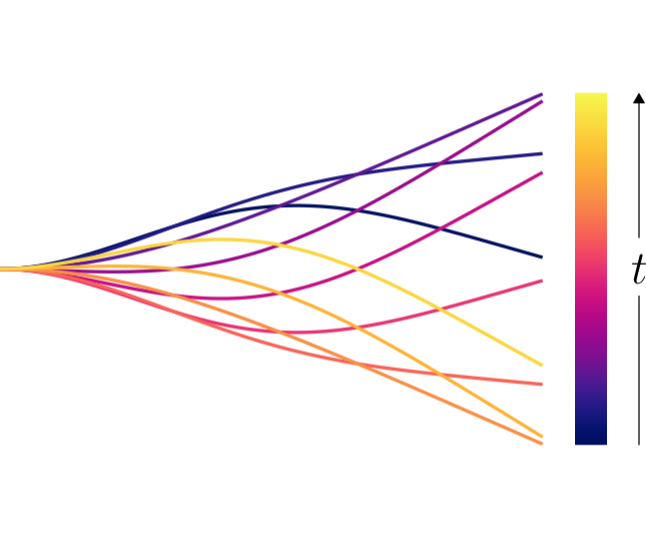

D. Floryan and C. W. Rowley, Journal of Fluid Mechanics (2018), 853, 271–300
doi: 10.1017/jfm.2018.581
arXiv: 1807.07499
When swimmers are flexible, the elastic forces induce resonant frequencies. It's known that flapping at a resonant frequency creates local maxima in thrust production and power consumption, but there are conflicting accounts as to how flexibility affects efficiency. We use theory to clarify the matter, revealing the importance of fluid drag and, surprisingly, flag-flapping behaviour. The image shows snapshots of a flag-flapping eigenfunction.
We study a linear inviscid model of a passively flexible swimmer, calculating its propulsive performance, eigenvalues and eigenfunctions with an eye towards clarifying the relationship between efficiency and resonance. The frequencies of actuation and stiffness ratios we consider span a large range, while the mass ratio is mostly fixed to a low value representative of swimmers. We present results showing how the trailing edge deflection, thrust coefficient, power coefficient and efficiency vary in the stiffness–frequency plane. The trailing edge deflection, thrust coefficient and power coefficient show sharp ridges of resonant behaviour for mid-to-high frequencies and stiffnesses, whereas the efficiency does not show resonant behaviour anywhere. For low frequencies and stiffnesses, the resonant peaks smear together and the efficiency is high. In this region, flutter modes emerge, inducing travelling wave kinematics which make the swimmer more efficient. We also consider the effects of a finite Reynolds number in the form of streamwise drag. The drag adds an offset to the net thrust produced by the swimmer, causing resonant peaks to appear in the efficiency (as observed in experiments in the literature).